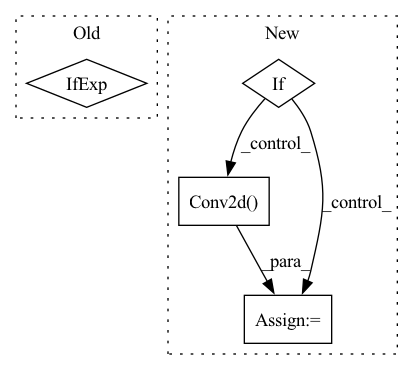

Pattern ID :33101
Before Change
if stride is not None:
self.stride = stride
else:
self.stride = 1 if input_channel == output_channel else 2
self.padding = padding if padding is not None else 1
self.norm = nn.BatchNorm2d if norm_layer is None else norm_layerAfter Change
self.padding = padding if padding is not None else 1
self.norm = norm_layer if norm_layer is not None else nn.BatchNorm2d
if remain_dim:
self.skip = nn.Conv2d( in_channel, out_channel, 1)
else:
self.skip = nn.Conv2d(in_channel, out_channel, 1, self.stride) if self.stride > 1 else nn.Identity()
In pattern: SUPERPATTERN
Frequency: 3
Non-data size: 4
Instances Fragment ID: 95765191
Project Name: blakechi/comvex
Commit Name: 56808952c25e98d69c362278e6e227b1318134d0
Time: 2021-04-09
Author: pwchi@ucdavis.edu
File Name: models/utils/resnet.py
M Class Name: ResNetBlockBase
N Class Name: ResNetBlockBase
M Method Name: __init__(3)
N Method Name: __init__(0)
M Parent Class: nn.Module
N Parent Class: nn.Module
M File Name: models/utils/resnet.py
N File Name: models/utils/resnet.py
M Start Line: 21
M End Line: 30
N Start Line: 11
N End Line: 37
Before Change
self.channels = channels
self.self_condition = self_condition
input_channels = channels * (2 if self_condition else 1)
init_dim = default(init_dim, dim)
self.init_conv = nn.Conv2d(input_channels, init_dim, 7, padding = 3)After Change
self.patchify = self.unpatchify = identity
if patch_size > 1:
input_channels = channels * (patch_size ** 2)
self.patchify = nn.Conv2d( channels, input_channels, patch_size, stride = patch_size)
self.unpatchify = nn.ConvTranspose2d(input_channels, channels, patch_size, stride = patch_size)
// determine dimensions
Fragment ID: 95765193
Project Name: lucidrains/denoising-diffusion-pytorch
Commit Name: 1ca516ad6487b8356a6fffbe5b307f74df76d1d1
Time: 2023-01-31
Author: lucidrains@gmail.com
File Name: denoising_diffusion_pytorch/simple_diffusion.py
M Class Name: UViT
N Class Name: UViT
M Method Name: __init__(17)
N Method Name: __init__(15)
M Parent Class: nn.Module
N Parent Class: nn.Module
M File Name: denoising_diffusion_pytorch/simple_diffusion.py
N File Name: denoising_diffusion_pytorch/simple_diffusion.py
M Start Line: 293
M End Line: 366
N Start Line: 302
N End Line: 391
Before Change
else:
use_bias = norm_layer == nn.InstanceNorm2d
model = [nn.ZeroPad2d(3) if os.environ["DEEPLIIF_SEED"] != "None" else nn.ReflectionPad2d(3),
nn.Conv2d(input_nc, ngf, kernel_size=7, padding=0, bias=use_bias),
norm_layer(ngf),
nn.ReLU(True)]After Change
else:
use_bias = norm_layer == nn.InstanceNorm2d
if padding_type == "reflect":
model = [nn.ReflectionPad2d(3),
nn.Conv2d(input_nc, ngf, kernel_size=7, padding=0, bias=use_bias),
norm_layer(ngf),
nn.ReLU(True)]
else:
model = [nn.ZeroPad2d(3),
nn.Conv2d( input_nc, ngf, kernel_size=7, padding=0, bias=use_bias) ,
norm_layer(ngf),
nn.ReLU(True)]
Fragment ID: 95765192
Project Name: nadeemlab/deepliif
Commit Name: 41ce09abe97195df222066a45804b04c85a4f26f
Time: 2022-02-11
Author: 97479603+wendywwang@users.noreply.github.com
File Name: deepliif/models/networks.py
M Class Name: ResnetGenerator
N Class Name: ResnetGenerator
M Method Name: __init__(8)
N Method Name: __init__(8)
M Parent Class: nn.Module
N Parent Class: nn.Module
M File Name: deepliif/models/networks.py
N File Name: deepliif/models/networks.py
M Start Line: 350
M End Line: 376
N Start Line: 350
N End Line: 387